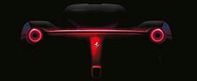
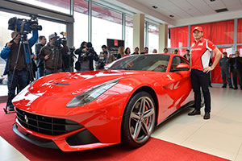

Geneva 2013: LaFerrari, noul supercar hibrid cu 963 CP, construit în 499 unităţi |
|
 |
„Am ales să numim acest model LaFerrari”, a declarat preşedintele Ferrari, Luca di Montezemolo, „pentru că este expresia maximă ce defineşte compania noastră – excelenţa. Excelenţa în inovaţie tehnologică, performanţe, stil vizionar şi fiorul condusului. LaFerrari este esenţa companiei noastre, în ceea ce priveşte ingineria, designul şi ceea ce am învăţat din Formula 1”.
LaFerrari utilizează o tehnologie hibridă numită HY-KERS, reprezentând combinaţia perfectă între performanţa maximă şi emisiile scăzute. LaFerarri emite doar 330 g/km de CO2, fără a recurge la modul de condus 100% electric, ce nu s-ar potrivi cu acest model. Cu toate acestea, sistemul HY-KERS a fost proiectat încât să permită mersul exclusiv electric, iar în timpul testelor de dezvoltare, un prototip LaFerrari a obţinut emisii de doar 220 g/km în ciclul combinat.
LaFerrari este primul Ferrari cu propulsie hibridă, având un motor pe benzină V12 de 6,3 litri ce dezvoltă 800 CP, cu turaţie până la 9.250 rpm. Acesta este cuplat la un motor electric de 120 kW/163 CP, oferind astfel vehiculului o putere maximă de 963 CP. Cuplul înalt este disponibil încă de la pornirea motorului electric, oferind o putere excepţională pe întreaga plajă de turaţii. Cuplul total al sistemului hibrid este de 900 Nm.
Pachetul de baterii cântăreşte doar 60 kg şi se poate reîncărca în timpul frânării sau când motorul V12 produce mai mult cuplu decât este nevoie, de exemplu în viraje. Motorul electric este cuplat cu o cutie de viteze cu dublu ambreiaj F1.
Noul supercar LaFerrari accelerează de la 0-100 km/h în mai puţin de 3 secunde, atinge 200 km/h în sub 7 secunde şi poate parcurge un tur al circuitului Fiorano în mai puţin de 1 minut şi 20 secunde – cu 5 secunde mai rapid decât Enzo şi cu peste 3 secunde mai rapid decât F12berlinetta.
LaFerari, cea mai rapidă maşină de stradă din istoria Ferrari, şi-a făcut debutul mondial în cadrul Salonului Auto de la Geneva (7-17 martie 2013) şi va fi construită într-o ediţie limitată la doar 499 unităţi. Preţurile nu au fost anunţate.
Video: LaFerrari - premieră la Geneva Motor Show 2013
Ferrari F70, înlocuitor pentru Enzo din 2013, prima fotografie reală |
|
|  |
Ferrari a confirmat că va prezenta la Salonul Auto de la Geneva (5-17 martie 2013) noul supercar ce va înlocui modelul Enzo.
„Cel mai puternic HyperFerrari îţi va tăia respiraţia, un hipercar ce va eclipsa orice concurenţă”, a scris Ferrari pe o reţea de socializare.
Compania a mai precizat de asemenea că noul model va avea tehnologie preluată direct din Formula 1.
update 14 decembrie:
Ferrari a publicat o primă fotografie tip teaser în revista online a companiei. Se observă spatele noului supercar F70, înlocuitorul lui Enzo.
update 4 decembrie:
Iată şi prima imagine cu succesorul lui Ferrari Enzo, mult anticipatul Ferrari F70. Conform paginiiFacebook Ferrari F70, această fotografie a fost realizată în cadrul unui eveniment privat din China iar lansarea oficială este programată anul viitor.
Ferrari F70 se zvoneşte că va avea ca propulsie un sistem HY-KERS format dintr-ul motor V12 de 6,2 litri şi un motor electric alimentat de o baterie Li-Ion, ce dezvoltă în total 920 CP. Astfel, supercar-ul italian va accelera de la 0-100 km/h în mai puţin de 2,5 secunde iar viteza maximă va fi de peste 400 km/h.
text iniţial 26 aprilie:
„Intrăm pe piaţă cu un derivat din sistemul nostru hibrid din Formula 1, ce va tăia consumul de carburant şi va creşte performanţele”, a declarat Amedeo Felisa, CEO al Ferrari, la Salonul Auto de la Beijing.
Ferrari spune că aşa numitul sistem hibrid "HY-KERS" reduce consumul de carburant cu până la 40% şi micşorează timpul de accelerare de la 0-200 km/h cu aproximativ 3 secunde comparativ cu un model Ferrari similar şi propulsie tradiţională.
Sistemul HY-KERS adaugă circa 120 kg la greutatea maşinii, însă constructorul italian de maşinisuper-sport spune că va compensa acest lucru prin folosirea unor noi materiale uşoare pentru şasiu şi propulsorul pe benzină. Şasiul maşinii va avea aceeaşi compoziţie de fibră de carbon folosită şi la maşinile din Formula 1.
Compania coreeană Samsung Electronics va furniza celulele Li-Ion pentru Ferrari, care le va amplasa apoi în propriile pachete de baterii la sediul central al diviziei F1 din Fiorano, lângă Modena (nordul Italiei).
Conform speculaţiilor din înlocuitorul lui Ferrari Enzo va avea un motor V12 de 6,2 litri la fel ca cel de pe
Astfel, înlocuitorul lui Ferrari Enzo ar ajunge un rival pe măsura lui Bugatti Veyron, cu o acceleraţie la 0-100 km/h în 2,5 secunde şi viteză maximă de peste 400 km/h.
Noul Enzo, cunoscut sub numele de cod F70, este aşteptat să-şi facă debutul la Salonul Auto de la Geneva în 2013.
F12 Berlinetta, cel mai rapid model Ferrari, lansat oficial în România |
|
|  | |
Precizia extremă a comenzilor și forța suprarealistă, administrate motorului de 12 cilindri, fac din F12 Berlinetta modelul pentru care se spune că fabrica de la Maranello a negociat direct cu Marele Creator al legilor fizicii.
„F12 Berlinetta pune accent pe eleganță și pe elementele armonioase. Designul final al acestui model Ferrari este o colaborare foarte strânsă a celor din departamentul de design și specialiștii în aerodinamică. Probabil că nu mai există o altă mașină în lume care să combine acest nivel de performanță, eleganță, dramă și lux, cum le întruchipează F12 Berlinetta. O mașină aflată la granița dintre fantezie și realitate, care își recompensează proprietarul cu o experiența fantastică la volan.“ a declarat Camelia Bazac, CEO Forza Rossa.
Ferrari F12 Berlinetta este cel mai rapid model de strada Ferrari din toate tiSmpurile: 740 CP și 690 Nm, cu o viteză maximă de 340 km/h și care ajunge la 100 km/h în 3,1 secunde. Sunt necesare doar 8,5 secunde pentru a atinge 200 km/h. Cu toate acestea, nu este o mașină dificil de condus, chiar și cu cei 740 CP pe puntea spate. Are cea mai ageră direcție dintre toate modelele Ferrari, iar frânele carbo-ceramice sunt de ultima generație. Este o mașină care se conduce la fel de bine atât pe serpentine, cât și pe circuit.
Ferrari F12 Berlinetta va beneficia de tehnologia şi cunoştinţele MICHELIN, fiind echipata cu anvelopele MICHELIN Pilot Super Sport. Misiunea încredinţată acestor anvelope este simplă: a spori plăcerea de a conduce, asigurând în acelaşi timp siguranţă maximă, chiar şi în condiţii extreme, combinând trei tehnologii, două dintre ele fiind derivate direct din anvelope folosite în competiţia 24 Hours Le Mans.
F12 Berlinetta este o maşină care poate fi folosită zi de zi, care vine cu un pachet de întreţinere de şapte ani, o mașină în care poţi purta o conversaţie şi care se comporta minunat pe distanţele lungi.
Giancarlo Fisichella: “F12 Berlinetta este o mașină excepțională, la volanul căreia te simţi cu adevărat campion!”
Cunoscutul pilot italian, Giancarlo Fisichella, în cei 12 ani de performanță în Formula 1 a pilotat pentru 6 echipe, culminând cu Ferrari. Giancarlo Fisichella a câștigat în 2012 - pentru al doilea an consecutiv - titlul de Campion Mondial al FIA World Endurance Championship, la volanul unui automobil 458 GT2.
Ferrari F12 Berlinetta costă în România 230.000 euro fără TVA.
Reprezentanţii Forzza Rossa au precizat că numărul de unităţi Ferrari alocate României a rămas constant în ultimii ani, iar toate cele 30 de unităţi repartizate în 2012 au fost vândute. Din cele 30 de repartizate în România pentru acest an, mai puţin de zece unităţi vor fi F12 Berlinetta, potrivit importatorului auto.